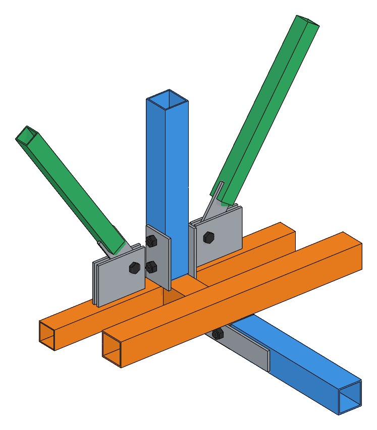

Why the trusses are above the deck
The deck sits 19 to 22 in up and needs 12 in clear over the river. That leaves about 10 in under it, so the depth goes on top.
| Rule (2027) | Limit | This bridge |
|---|---|---|
| Deck height | 19 to 22 in | 21 3/8 in |
| Clearance over the river | 12 in or more | 18 7/8 in |
| Envelope | 5 ft x 5 ft | 4 ft 6 in tall |
| Longest piece, with its plates | 42 in box | 41 5/8 in |
| Sway under 50 lb | 3/4 in (3/8 in bonus) | 0.11 in |
How it was designed
1. Analysis
STAAD.Pro 2026
Loads, deflection, member checks.
2. True-size joints
FreeCAD
Every plate and bolt at real size.
3. Drawings
SolidWorks 2026
Assemblies and shop sheets.
4. Joint checks
AISC 360-22
Bolts, plates and welds by hand.
Build guide

Ready
Bottom joint at each post
29 steps in 3D: cut, drill, weld, bolt.
Open →Next
Top joints
Diagonals and post tops.
Next
Where pieces meet
Splices in the chords.